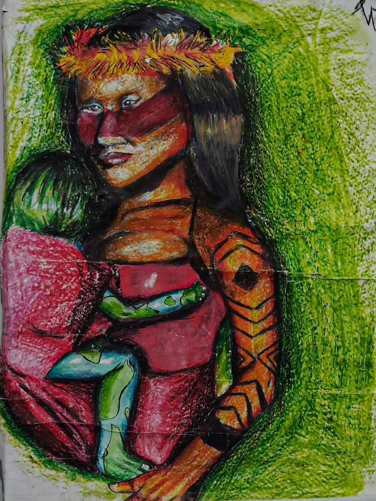
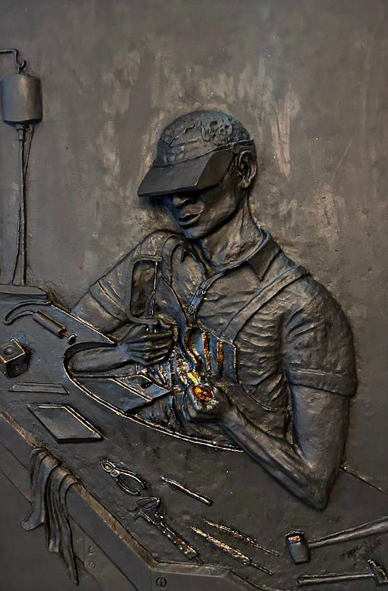
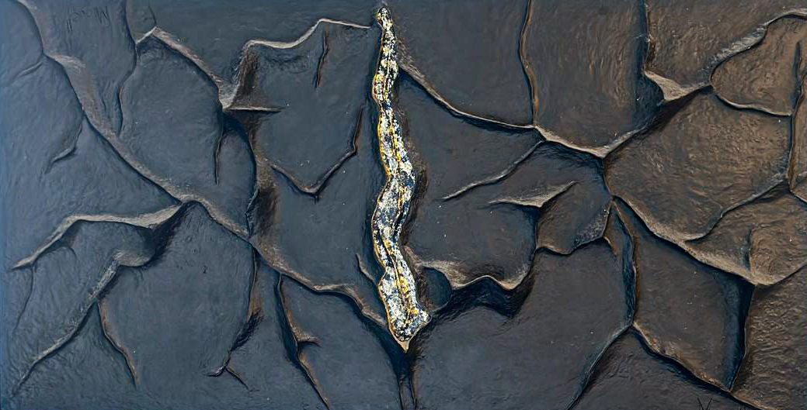
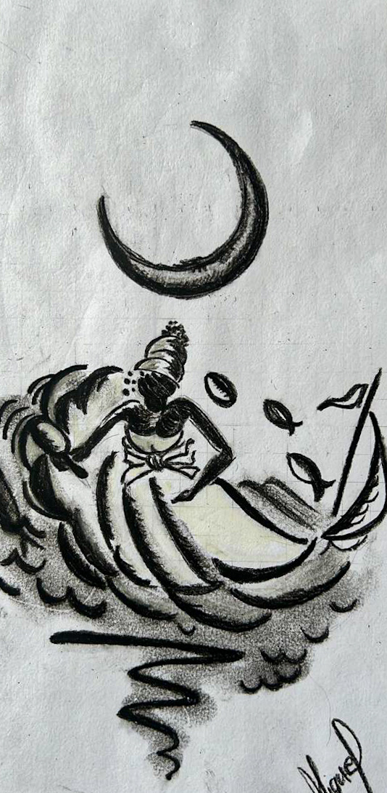
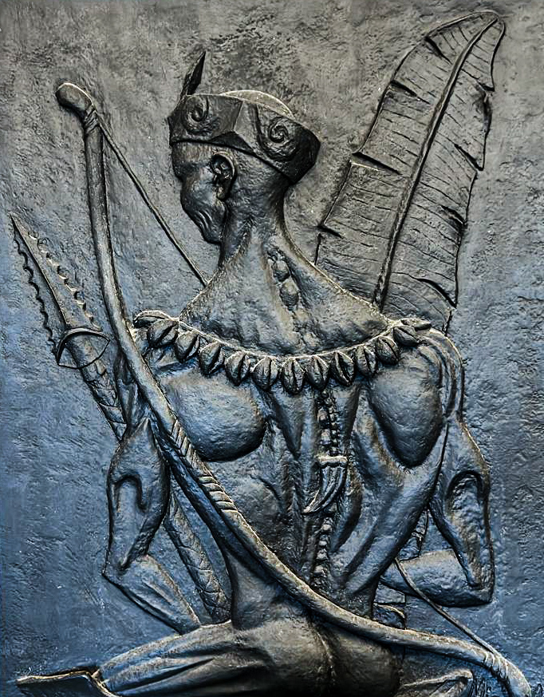

Recomeço ou Fim
Autor: Lázaro França

Meio e Fim
Autor: Lázaro França

Fé, Único Alimento
Autor: Lázaro França

O Ouvires
Autor: Miguel Conceição

Abaeté
Autor: Miguel Conceição

Estudo sobre Iemanjá
Autor: Miguel Conceição

Cabeça de Rei
Autor: Miguel Conceição
Obra 1 de 8